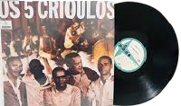

Os Cinco Crioulos foram um grupo musical brasileiro de samba na década de 1960, resultante da mistura entre os integrantes dos conjuntos A Voz do Morro e Rosa de Ouro (criado para o espetáculo homônimo)
Ascecarzinho do Salgueiro
Eltom Medeiros
Jair do Cavaquinho
Mauro Duarte
Nelson Sargento
Paulinho da Viola
A banda teve apenas um álbum que é "O samba no duro", que foi gravado 3 vezes, em 1967, 1968 e 1969(sendo o de 1968 nomeado como volume 2) pela mídia LP e gravadora Odeon. E algum tempo após, 5 dos integrandes fazem o albúm rosa de ouro
No ano 2000 o grupo voltou a se reunir no disco “A música brasileira deste século por seus autores e intérpretes – Paulinho da Viola e os Quatro Crioulos”, CD gravado em julho de 1990 no programa “Ensaio”, quando na época teve como convidado Paulinho da Viola, que para sua surpresa, foram também convidados os outros integrantes (Anescarzinho do Salgueiro, Jair do Cavaquinho, Elton Medeiros e Nelson Sargento), em uma homenagem aos 25 anos do antológico show “Rosa de Ouro”.